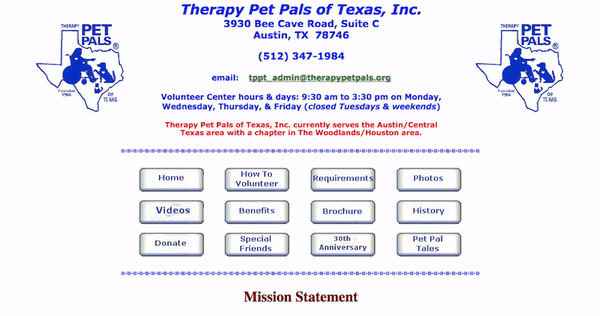
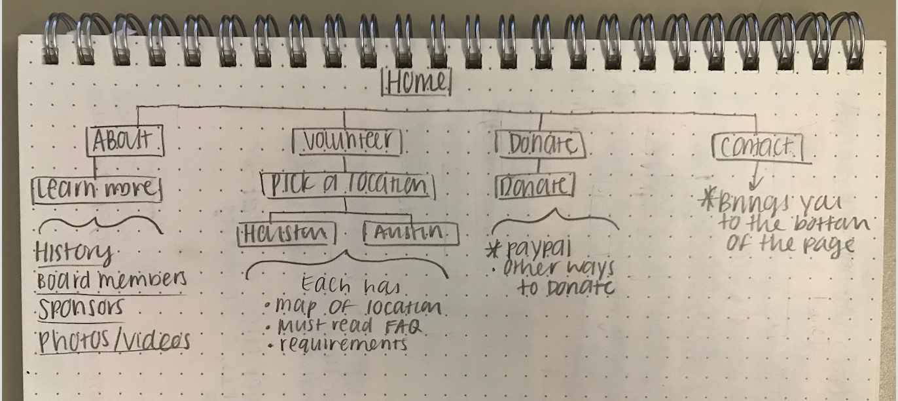
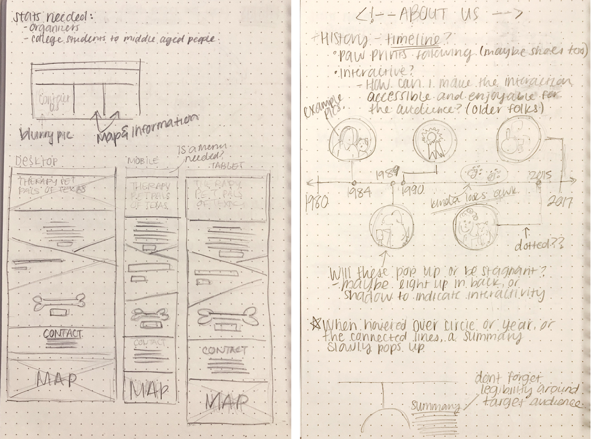
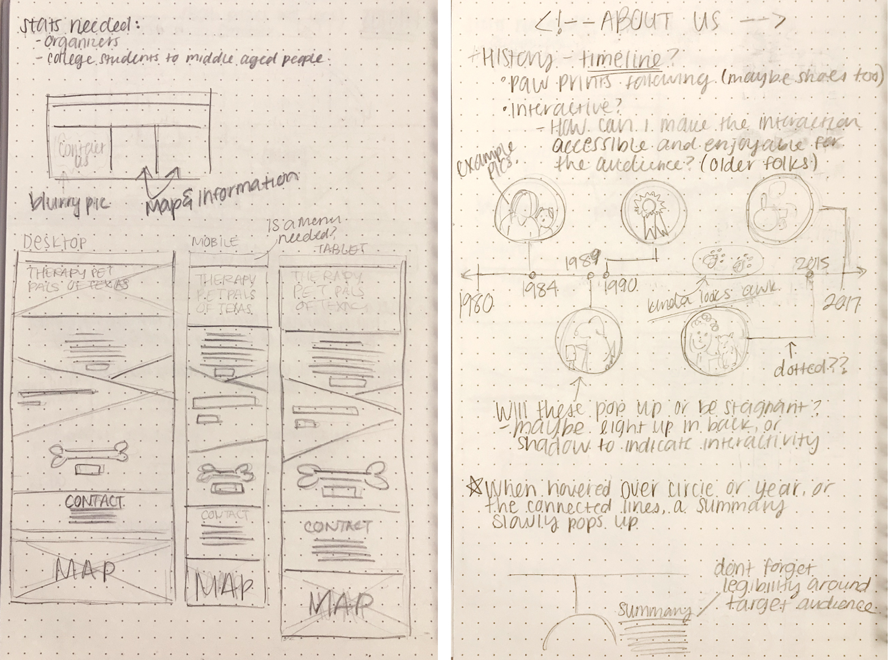
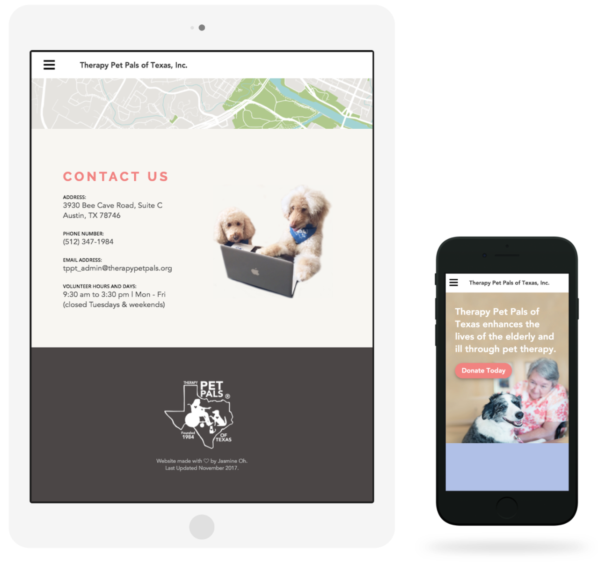
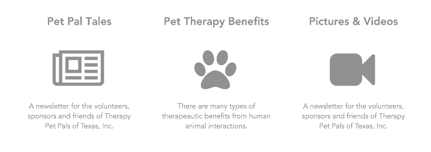
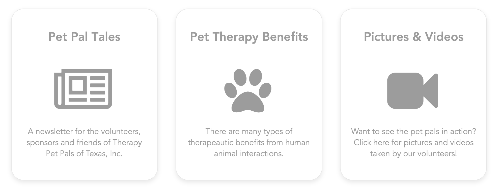
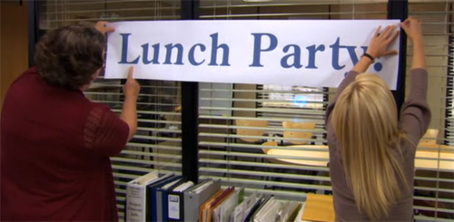

Therapy Pet Pals of Texas
Website re-build and re-design using UX/UI methodologies
- Role:
- UX/UI Designer, Front-End Developer, Web-development, Photographer
- Tools Used:
- Sketch, Photoshop, HTML, CSS, Javascript
- Timeline
- January - November 2017
- Visit Site
Overview
Therapy Pet Pals of Texas (TPPT) is a non-profit, 501(C)(3) volunteer organization based in Austin, TX. Through their volunteers, they provide pet therapy for institutionalized individuals in healthcare facilities who often lack companionship and encouragement.
I first wanted to volunteer my dog for TPPT, but soon realized the time constraints of taking 19 hours the upcoming semester would hinder me from volunteering as much as I wanted to. Since I still wanted to help out in some way, I decided to reach out and offer my skills for free. The old website’s design hadn’t been touched since the 90s, so there was an immense need for a website redesign / rebranding. The clunky architecture of the past site prevented users from easily learning more about the history of the organization, how to volunteer, or how to donate.
Preview of their old site
The Process
After emailing back and forth about this volunteer proposal, the directors of TPPT and I set up a meeting to get a better idea about their organization as well as what they wanted for the rebranding. In the meanwhile, I decided to audit their old site, and ended up finding many opportunities for improvement.
- 1. Wide line lengths resulting in blocks of text that impede readability
- 2. Too many navigational buttons, leading to user confusion
- 3. Lack of responsive mobile and tablet versions of the site
- 4. Lack of visual separators on pages with more than two sections, confusing users with multiple versions of information (example: training dates for Houston vs. Austin)
- 5. Harsh colors that clash throughout the site
From this, I thought of possible solutions for each of the problems I found.
- 1. Shortened line lengths for optimal reading experience
- 2. Condensed navigational menu
- 3. Make the site responsive through mobile and tablet versions
- 4. Create visual dividers when necessary
- 5. Come up with a friendlier color palette that reflects the organization’s philanthropic goals
In order to begin the user research process, I came up with three general questions (that were quickly answered by the first meeting).
- 1. Who is the target audience?
- Prospective volunteers
- Organizations looking to request TPPT’s services
- A wide spectrum of people aged 20-65 years old
- 2. What are the main things that the audience looks for when they get to the site?
- Volunteer and contact information, as well as information on how to donate
- 3. What are the Organization’s goals?
- To bring as many volunteers they can to spread the philanthropy of pet therapy
** Ideally, it would have been more useful if I could have gotten access to talking with the audience themselves in order to organically reach these answers, but wasn’t allowed to interview their current volunteers because of TPPT’s privacy policies.
I introduced the idea of creating a new site structure to the directors in order to prioritize the pages with the organization’s goals in mind - something that I find crucial to make before designing the contents of a site. With this, we created a new site map (shown below).
After the first meeting, we came up with an overall design goal.
To make the website more inviting and accessible (particularly for older visitors) while implementing a warm, minimalistic design (attracting younger users) and simplifying navigation by making important links more prominent and intuitive.
This goal can be broken into three sections.
- 1. Making the site’s design appear more welcoming with a minimalistic layout
- Website building
- Imagery
- 2. Make the site’s navigation simpler
- Condensed pages
- Hamburger menu in responsive settings
- UX testing insights
- 3. Drive more engagement, particularly from younger users (18-30)
- Responsive in Mobile Phones and Tablets
- Google forms - Logging volunteer hours
- Online donation system - Paypal
// Wireframing
With the the design goals and new site structure in mind, I sketched out the wireframes for the site.

 

// Front-End Development
Using HTML, CSS, and Javascript, I decided to build a static site for TPPT. The reason why I decided to go with a static site rather than with a CMS (Content Management System) was:
- 1. The site is small and isn’t too information heavy
- 2. The site isn’t like a blog where there’s constantly new content
- 3. To challenge myself by creating an entire website from scratch using the HTML, CSS, and bit of Javascript knowledge I’ve taught myself a few months prior - rather than using something already set for me, like Wordpress or Squarespace.
Over the course of the next ten months, we set up meetings at least once a month to go over progress and discuss different strategies in order to help reach their goals through different UI aspects. As expected, within those ten months, there were many design changes throughout the site building process.
For example, the first draft of the site looked like this:

// Photography
As a photographer, I felt that quality photographs in websites communicates a level of professionalism especially that an established organization such as TPPT should have. When using the right images on a website, images can provoke an emotional response in users, influencing site visitors to want to (in this case) volunteer or even donate.
After expressing my concerns for their lack of quality imagery, I offered my photography skills to help out with this issue. With this, I went to photograph patients with the volunteers and their dogs at a nursing home and ended up using one of these pictures as the header for the final edition of the website.

// New Page Additions
We decided to add media (Pictures and Videos) page, a benefits page, a link for their yearly newsletter, as well as an Hours Log Form (Google Form) for their current volunteers to the site.
// Google Forms
Their past system to gather volunteer hours every quarter was too slow and time-consuming for the staff. By implementing a simple google form for TPPT, the form would automate the process of collecting and saving information, saving the office volunteers as much as 2 weeks of work per quarter.
// Mobile and Tablet Versions
Even though I’m not a huge fan of hamburger menus, I can’t deny that it truly works, and that people know how to use it. Whenever I asked the older ladies at the TPPT office to use the mobile site on my phone, they had no trouble clicking on the 3 stacked lines to get to the navigation portion of the site.
// User Testing
Throughout the site building process, I asked my friends or professors to use the site for a minute (either on my phone or the computer) and see if they could complete certain tasks (such as, “can you go to the ‘about’ section of the site?” or “what would you do if you wanted to learn more about volunteering in Houston?”). The only issue people seemed to keep running into would be the three buttons below the volunteer section.
Now, these buttons were a bit more identifiable on the desktop site since there was a hover state for cursors as they would transition into a different color. However, on the mobile and tablet sites, the buttons would look too flat and users wouldn’t normally think to click on them. In order to fix this problem, I created a border around each button with a slight shadow to show depth. Ever since I added this feature, the older ladies at the TPPT office were able to distinguish these links as buttons without me asking about these new changes, as before, they scrolled right past them (they thought they were just extra information).
// Adding an Online Donation System
TPPT’s donation method was out-of-date, as it required filling out a form, writing a check, and mailing it to their office. Given the prevalence of online payment today, I tried my best to stress the importance of adding an online donation system to their website. If they had kept their old donation method, the tedious nature of these numerous steps to donate would frustrate potential donors to the point where they would give up the idea of donating at all.
Their main hesitance towards this change was on the fact that PayPal needed a social security number in order to verify that there was an actual person who was in charge of the non-profit. While I understood their concern, I felt that as a UX designer, I had to do my part in pushing for a more accessible up-to-date donation option that was a win/win for both the company and its donors.
In the end, a PayPal donation system was implemented to the site!
We are currently in the process of gathering statistics on how this change affected their donations :)
The Launch
After months of evolving and refining the visual details of the site, the new and improved website for Therapy Pet Pals of Texas was launched November 27th, 2017.
Afterthoughts / What I would have done differently
When I first started with this project, I was brand new to front-end development, as well as UX research. From that, I wasn’t aware of the research methods I could have started with, but was incorporated later on in the project. I asked the directors if I could have access to some raw data with who the volunteers are, their age, how often they volunteer, and if I could reach out to them for interviews for research purposes, but unfortunately was turned down because of privacy reasons. However, their guesstimate on the “audience” portion was the best I could do.
Since the project duration lasted 10 months, I luckily had time to reflect and make various changes in the research, user testing, and the visual design aspects. One of the biggest lessons that this project experience has taught me was to organize and document my processes diligently. My notes for each of the meetings were all over the place for the start of the project, but ended up becoming more consistent and more thought-out towards the end.